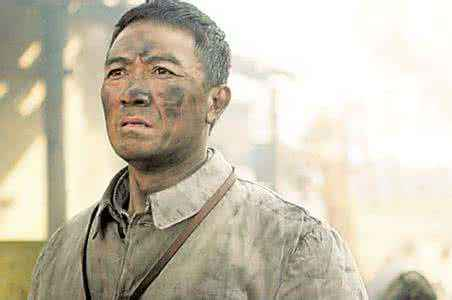

读《亮剑》有感
2020年2月6日
“如果祖国遭受了侵犯，热血男儿当自强！喝干这碗家乡的酒，壮士一去不复返……”想到《亮剑》，自然会想起同名电视剧的片头曲《中国军魂》。在电视剧中，演员李幼斌用其炉火纯青的演技完美诠释了李云龙铁血硬汉的形象，因此我认为电视剧已经相当完备。而在一遍又一遍的“温习”电视剧情节中，我发现电视剧中到最后只是拍到李云龙从军事学院毕业并授予其少将军衔，因此我认为这个结局略显突兀，此后应仍有曲折的故事。所以我渐渐对原著产生了兴趣。通过读原著，我发现电视剧中所描写的情节与形象只不过是冰山一角，而原著中的更为细腻。
书中主角李云龙，是一个从大别山走出来的穷苦人，中共组织的“黄麻暴动”时参加了中国工农红军。因为抗战时期多次立功但也多次犯错，职位升升降降，从团长一直到最后的军长。从《亮剑前传》与《亮剑》整个来看，李云龙的一生分三个时期，第一个是长征时期，第二个是战争时期（分为抗日战争与解放战争），第三个为解放后的和平时期。第一个时期是《亮剑》全书的一个引子，在这里便不多介绍。其中最为精彩的为战争时期，主要描写了李云龙与众不同的指挥作战的思维，就如文中日军情报部门的李云龙的报告中所说其“思维灵活多变，多采用逆向思维，处事从不拘泥于形式……”这也侧面赞赏了李云龙的性格。李云龙不但指挥才能友谊，也是有情有义的热血英雄。就例如书中第七章李云龙率团攻打平安县城，只因为老婆被山本一木抓走，冲冠一怒为红颜，集结在地方修整的部队，不以常规套路选取一个地方为主攻点，而是以四面围攻的方式攻打，结果由于平安县城内守军有限，四面均衡防守压力巨大，因而攻打平安县胜利。但到最后攻打主城门楼的时候，六门山炮同时开火，在城门楼上的李云龙的第一任妻子秀芹也因此殒命。由此可见李云龙的有情有义的性格。
总体来讲，李云龙算是个悲剧人物，但并不是个人的悲剧，而是一个时代的悲剧。我党早已经把文化大革命定性为党的一次严重失误，而本书的存在恰恰是对我党的一个委婉的提醒。文化部能允许此书出版并且拍成著名电视剧，就是我党能够承认错误并且显示了不再犯类似错误的决心。